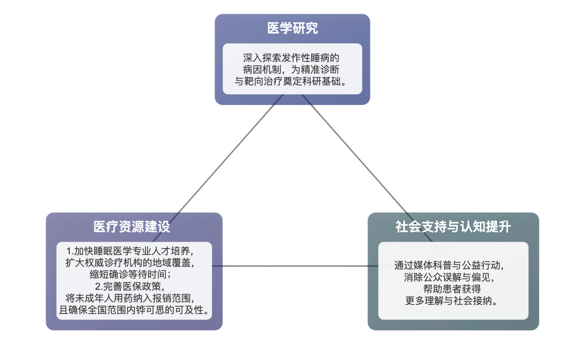

发作性睡病通常起病于儿童和青少年。我国患者发病高峰年龄小于5-9岁，由于病程贯穿患者求学和个性发展的关键时期，临床症状严重影响患者的学习和生活。

夜色深沉，她的意识却被无形困锁，身体沉重无法动弹；白昼之下，困意又如洪水般袭来，让她猝然睡倒，引来周遭一片困惑的目光。 她徒劳地与眼皮抗争，却总败给突如其来的睡魔。
这并非懒惰或疲倦，而是发作性睡病患者日复一日的残酷日常。
"发作性睡病的发作是不定时的，并且我自身很难控制它。 "国内最大发作性睡病患者组织负责人暴敏冬女士描述着她与病情作伴的日常，"如果不吃药，我几乎无法正常生活，连走路都成问题，所以我只能靠在沙发上，以便发作时能直接躺下。"


这种罕见的神经系统疾病严重影响着患者的生活质量，即使夜间睡眠充足，他们仍饱受无法抗拒的日间嗜睡折磨。按发病率推算，全球发作性睡病患者约300多万，中国患者约70万，是中国患病率较高的罕见病之一。
发作性睡病通常起病于儿童和青少年。我国患者发病高峰年龄小于5-9岁，由于病程贯穿患者求学和个性发展的关键时期，临床症状严重影响患者的学习和生活。

数据来源：
由官方发布的发病率进行推算

数据来源：
《中国发作性睡病患者疾病经济负担与生命质量研究》
一项针对280名患者的研究显示，约有16.09%的未成年患者和10.88%的成年患者曾遭遇学校拒收，其处境之艰难可见一斑。
中国罕见病联盟与北京大学联合发布的一项研究显示，超90%的发作性睡病患者曾因疾病遭受“误解”，大多数人甚至被“嘲笑”。这种巨大的社会压力直接侵蚀着患者的心理健康：同等比例（超90%）的患者可能存在抑郁，其中约半数更是达到了中重度及以上程度。
被误解为"懒惰"的无形病症化作千钧重力，如洪水猛兽侵袭着他们，潜移默化地影响着他们的学业、事业、生活与社交。
发作性睡病究竟是什么？
它又如何侵蚀患者的日常生活？
这群"清醒的梦游者"又该如何寻找出路？
在关注与理解的空白处，发作性睡病患者的需求正等待被真正看见。
关于发作性睡病，我们需要了解......
发作性睡病属于终身性疾病，目前无法被完全治愈。日间过度思睡是其最常见的症状，即使在夜晚睡了很长时间，白天仍然感到极度困倦，并且无法控制地入睡。这种嗜睡在任何场合都可能发生，比如行走、交谈、吃饭，甚至开车时。
其他常见临床表现有：猝倒（在有强烈情绪时，全身肌肉张力突然消失）、睡眠瘫痪（身体暂时无法动弹，通常持续几秒到几分钟）、夜间睡眠紊乱（入睡困难、易醒、多梦等症状，导致夜间睡眠质量下降）和出现幻觉。

此外，发作性睡病还可能伴有肥胖、性早熟、精神障碍、注意力不集中、记忆力下降、偏头痛等症状。
“我必须时刻控制情绪，让自己尽量无悲无喜，因为任何情绪波动都可能诱发猝倒。” 暴敏冬补充到，“它的发生也不仅仅是因为情绪。很多时候我都不明白它为什么发生，有时候走路途中就发生了。”

数据来源：统计小红书关键词为“发作性睡病”的相关笔记中的评论及回复，共统计1063，数据统计截止时间为2025年8月3日。
目前，发作性睡病的病因尚未完全明确，其发病可能与遗传、自身免疫、感染及神经环路变化机制相关。

“长达十年的等待”——发作性睡病的诊断难题
敏冬分享了一个令人心碎的故事：一位女孩从15岁起因出现幻觉被误诊为精神分裂症，整整接受了十年错误的治疗。
“一个女孩子，从15岁到25岁，本应该是她最美好的年华，却被困在了‘精神分裂症’的枷锁之下。”敏冬叹息道。
女孩的父亲通过网络了解到发作性睡病的症状,带她前往大医院复查，才正确诊断出她患有发作性睡病——她最初患上的根本就不是精神分裂症。
然而更残酷的是，十年的错误治疗已无法挽回。“医生说，她原本没有精神分裂症，却因长达十年服用相关药物，最终被查出了药物导致的精神分裂症。”
这样的悲剧并非个例。《我国发作性睡病疾病患者疾病特征、治疗现状与经济负担调查》显示，超50%的患者曾被误诊为精神或心理障碍。确诊之路漫长而曲折：成人患者平均需3年，最长甚至达23.5年；而儿童患者平均也需耗时7.8个月。
这与一项国际研究的结论一致——发作性睡病最常被误诊为抑郁症、焦虑症、多动症、失眠或嗜睡症。

数据来源：Misdiagnoses and Comorbidities among Participants in the Nexus Narcolepsy Registry
误诊与延迟诊断的背后，是诊断复杂性和医疗资源短缺的残酷现实。

数据来源：
《中国发作性睡病诊断与治疗指南（2022版）》
据悉，要完全确诊患者是否患有发作性睡病，目前需要通过多种方式来进行排查，因此诊断时间被迫拉长。
发作性睡病专家韩芳曾在访谈节目中表明，确诊需要进行复杂检查，但可以完全掌握这些方法的医生并不多。

数据来源：睡眠网
今年7月的数据显示，当前中国睡眠健康领域专业人才总量不足1.3万，面对近70万潜在患者，杯水车薪。
此外，医疗资源在地理上的极端不均，也为患者筑起了一道难以逾越的“地理鸿沟”。
目前，能够规范诊疗发作性睡病的权威医院高度集中于广东、北京、山东等地的省会城市，迫使外地患者必须长途跋涉，付出巨大的时间和金钱成本。

数据来源：
发作性睡病患者教育公益网站“睡不醒的考拉”
治不好的病，无休止的花费

发作性睡病患者面临的不仅仅有来自“难以诊断”的挑战，还需承担着沉重的治疗带来的经济压力。
发作性睡病目前尚无已知的治愈方法，患者需要终生治疗，长期服药。
同时，治疗发作性睡病的12种药物均属于改善型药物，即对每个症状进行针对性服药，如白天思睡则使用兴奋剂、夜间睡不着用抑制剂等。
这12种药物中，仅铧可思（盐酸替洛利生片）是国内唯一获批治疗发作性睡病的专用药物，副作用相对较少。其他药物虽可能用于缓解症状，但实际是用于治疗其他疾病的（如，用于治疗多动症的哌甲酯缓释片）。
值得欣慰的是，这款药物已于2023年在中国获批上市，并于同年快速被纳入国家医保目录。经过医保报销后，患者每月用药费用从原来的约2400元，降至仅需自付600元左右，大大减轻了长期治疗的经济负担。

然而，现实中不少患者和家属依然面临用药困境。
有网友反映，由于能够开出铧可思的医院数量非常有限，他们只能全价网购或托人异地代购，无法通过医保渠道购买。
敏冬也指出，未成年人购买铧可思尚无法使用医保。铧可思并非精麻药品，相比其他治疗药物毒副作用较小，因此不少儿童患者家的长仍在原价购买，只为让孩子获得更好的治疗。
但在经济压力下，一些家长不得不让孩子继续服用治疗多动症的促醒药，以节省开销。“大家都盼望能早点将替洛利生的儿童患者用药也纳入医保，为更多家庭减轻负担。”
治疗的费用究竟有多高昂？《发作性睡病疾病患者疾病特征、治疗现状与经济负担调查》给出了触目惊心的答案：一名成人患者一年的治疗总成本平均高达3.7万元，而一名儿童患者更是高达5.4万元。
这绝非仅仅是药费。这笔费用由三部分组成：直接的医疗支出（门诊、药物）、隐形的非医疗支出（异地就医的交通住宿、护工），以及间接成本——因频繁请假、无法正常工作甚至失业而造成的收入损失。
然而，2024年全国居民人均可支配收入仅为41314元。
这意味着，一个普通家庭全年的全部可支配收入，甚至不足以覆盖一名儿童患者一年的治疗费用。当疾病的年成本远超国民的年均收入时，“治疗”本身，就成了一场绝大多数普通家庭都难以承受的经济消耗战。

数据来源：
《我国发作性睡病疾病患者疾病特征、治疗现状与经济负担调查》
进步迈向更包容的未来
近十年来，发作性睡病逐渐获得了更多社会关注，被更多人理解。其医疗政策更是实现多项关键突破，为患者的诊断与生活质量托底。
然而，前行之路依然道阻且长。
发作性睡病的病因尚不明确、复杂的诊断流程、专业人才的断层、睡眠科室的稀缺，仍严重阻碍患者获得有效治疗。
同时，药物选择有限、副作用明显、医保覆盖不足，依旧让患者家庭不堪重负。

未来，要真正为患者创造更包容的生存环境，我国还需在医学研究、医疗资源建设和社会支持与认知提升三个方面协同发力：
当科学、医疗与媒体三方协同发力，才能帮助发作性睡病患者减少误解与忽视，真正获得支持。让我们共同努力、关注与行动，创造一个真正理解、包容这类患者的社会。